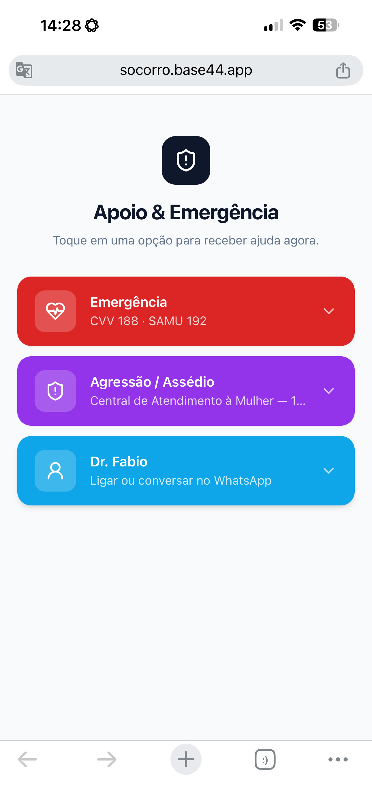

<template>
  <script src="../../assets/vendor/gsap.min.js"></script>
  <style>
    @font-face{font-family:"Space Grotesk";font-weight:400;font-style:normal;font-display:block;src:url("../../assets/fonts/space-grotesk-latin-400-normal.woff2") format("woff2");}
@font-face{font-family:"Space Grotesk";font-weight:500;font-style:normal;font-display:block;src:url("../../assets/fonts/space-grotesk-latin-500-normal.woff2") format("woff2");}
@font-face{font-family:"Space Grotesk";font-weight:600;font-style:normal;font-display:block;src:url("../../assets/fonts/space-grotesk-latin-600-normal.woff2") format("woff2");}
@font-face{font-family:"Space Grotesk";font-weight:700;font-style:normal;font-display:block;src:url("../../assets/fonts/space-grotesk-latin-700-normal.woff2") format("woff2");}
@font-face{font-family:"Inter";font-weight:400;font-style:normal;font-display:block;src:url("../../assets/fonts/inter-latin-400-normal.woff2") format("woff2");}
@font-face{font-family:"Inter";font-weight:500;font-style:normal;font-display:block;src:url("../../assets/fonts/inter-latin-500-normal.woff2") format("woff2");}
@font-face{font-family:"Inter";font-weight:600;font-style:normal;font-display:block;src:url("../../assets/fonts/inter-latin-600-normal.woff2") format("woff2");}
@font-face{font-family:"Inter";font-weight:700;font-style:normal;font-display:block;src:url("../../assets/fonts/inter-latin-700-normal.woff2") format("woff2");}


    #root {
      position: absolute;
      inset: 0;
      width: 1080px;
      height: 1920px;
      overflow: hidden;
      font-family: "Inter", sans-serif;
      color: #111111;
    }

    #f02-bg {
      position: absolute;
      inset: 0;
      background: #fdfae7;
    }

    /* ---------- text block (upper ~23%) ---------- */
    #f02-head {
      position: absolute;
      left: 72px;
      right: 72px;
      top: 96px;
    }
    .f02-steprow {
      display: flex;
      align-items: center;
      gap: 28px;
      height: 124px;
    }
    #f02-num {
      font-family: "Space Grotesk", sans-serif;
      font-weight: 700;
      font-size: 132px;
      line-height: 1;
      color: #1e2bfa;
      letter-spacing: -0.02em;
    }
    #f02-pill {
      font-family: "Space Grotesk", sans-serif;
      font-weight: 600;
      font-size: 34px;
      letter-spacing: 0.04em;
      color: #1e2bfa;
      background: rgba(30, 43, 250, 0.08);
      border: 1.5px solid rgba(30, 43, 250, 0.2);
      border-radius: 100px;
      padding: 12px 34px;
    }
    #f02-headline {
      margin-top: 22px;
      font-family: "Space Grotesk", sans-serif;
      font-weight: 600;
      font-size: 62px;
      line-height: 1.1;
      letter-spacing: -0.02em;
      color: #111111;
      max-width: 936px;
    }
    .f02-word {
      display: inline-block;
      margin-right: 0.24em;
    }
    #f02-helper {
      margin-top: 18px;
      font-family: "Inter", sans-serif;
      font-weight: 500;
      font-size: 34px;
      line-height: 1.3;
      color: #6b6b6b;
    }

    /* ---------- stage: clipped window for the phone + camera zoom (bottom = 1600) ---------- */
    #f02-stage {
      position: absolute;
      left: 0;
      top: 460px;
      width: 1080px;
      height: 1140px;
      overflow: hidden;
    }
    /* camera: same box as the phone; zoom with transform-origin 0 0 */
    #f02-cam {
      position: absolute;
      left: 272px;
      top: 10px;
      width: 536px;
      height: 1130px;
    }
    #f02-phone {
      position: absolute;
      left: 0;
      top: 0;
      width: 536px;
      height: 1130px;
      border-radius: 70px;
      background: #111111;
    }
    #f02-screen {
      position: absolute;
      left: 14px;
      top: 14px;
      width: 508px;
      height: 1102px;
      border-radius: 56px;
      overflow: hidden;
      background: #f2f2f2;
    }
    #f02-shot {
      position: absolute;
      left: 0;
      top: 0;
      width: 508px;
      height: 1102px;
      object-fit: cover;
      object-position: top center;
      display: block;
    }
    #f02-ring {
      position: absolute;
      left: 0;
      top: 0;
      width: 508px;
      height: 1102px;
      overflow: visible;
    }
    /* tap dot centered on the share icon (screen coords 468.4, 96.4) */
    #f02-tap {
      position: absolute;
      left: 453px;
      top: 81px;
      width: 31px;
      height: 31px;
      border-radius: 50%;
      background: rgba(30, 43, 250, 0.5);
      border: 2px solid #fdfae7;
    }
  </style>

  <div
    id="root"
    data-composition-id="02-iphone-compartilhar"
    data-width="1080"
    data-height="1920"
    data-duration="5.5"
  >
    <div id="f02-bg" class="clip" data-start="0" data-duration="5.5" data-track-index="0"></div>

    <div id="f02-head">
      <div class="f02-steprow">
        <div id="f02-num">1</div>
        <div id="f02-pill">iPhone</div>
      </div>
      <div id="f02-headline">
        <span class="f02-word">Abra</span><span class="f02-word">o</span><span class="f02-word">link</span><span class="f02-word">e</span><span class="f02-word">toque</span><span class="f02-word">em</span><span class="f02-word">compartilhar</span>
      </div>
      <div id="f02-helper">No Safari, o botão fica embaixo.</div>
    </div>

    <div id="f02-stage">
      <div id="f02-cam">
        <div id="f02-phone">
          <div id="f02-screen">
            
            <svg id="f02-ring" viewBox="0 0 508 1102" width="508" height="1102">
              <circle
                id="f02-ripple"
                cx="468.4"
                cy="96.4"
                r="22"
                fill="none"
                stroke="#1e2bfa"
                stroke-width="2"
                opacity="0"
              />
              <circle
                id="f02-ring-circle"
                cx="468.4"
                cy="96.4"
                r="22"
                fill="none"
                stroke="#1e2bfa"
                stroke-width="3"
                stroke-linecap="round"
                pathLength="1"
                stroke-dasharray="1"
                stroke-dashoffset="1"
                transform="rotate(-90 468.4 96.4)"
              />
            </svg>
            <div id="f02-tap"></div>
          </div>
        </div>
      </div>
    </div>
  </div>

  <script>
    (function () {
      const tl = gsap.timeline({ paused: true });
      const words = document.querySelectorAll("#root .f02-word");

      // Scene 1 (0.0-1.0s): step number + pill, per-word headline reveal
      tl.fromTo("#f02-num", { opacity: 0, y: 40 }, { opacity: 1, y: 0, duration: 0.5, ease: "power3.out" }, 0);
      tl.fromTo("#f02-pill", { opacity: 0, x: -24 }, { opacity: 1, x: 0, duration: 0.5, ease: "power3.out" }, 0.1);
      tl.fromTo(
        words,
        { opacity: 0, y: 36 },
        { opacity: 1, y: 0, duration: 0.45, ease: "power3.out", stagger: 0.07 },
        0.2
      );

      // Scene 2 (1.0-2.2s): phone rises in from below into the stage window
      tl.fromTo(
        "#f02-phone",
        { y: 760, opacity: 0 },
        { y: 0, opacity: 1, duration: 1.1, ease: "power3.out" },
        1.0
      );

      // Scene 3 (2.2-3.6s): zoom-to-target on the share icon; ring self-draws
      // icon in phone coords (482.4, 110.4) -> lands at stage (720, 400) at scale 2.4
      tl.fromTo(
        "#f02-cam",
        { scale: 1, x: 0, y: 0, transformOrigin: "0px 0px" },
        { scale: 2.4, x: -709.8, y: 125, duration: 1.2, ease: "power2.inOut" },
        2.2
      );
      tl.fromTo(
        "#f02-ring-circle",
        { attr: { "stroke-dashoffset": 1 } },
        { attr: { "stroke-dashoffset": 0 }, duration: 0.8, ease: "power2.inOut" },
        2.75
      );

      // Scene 4 (3.6-4.2s): tap dot presses the icon (press-release-spring); ring flashes once
      tl.fromTo(
        "#f02-tap",
        { opacity: 0, scale: 1.6, transformOrigin: "50% 50%" },
        { opacity: 1, scale: 1, duration: 0.2, ease: "power2.out" },
        3.4
      );
      // press: linear-ish compression
      tl.to("#f02-tap", { scale: 0.8, duration: 0.14, ease: "power1.in" }, 3.6);
      // release: spring back (adjacent start = state continuity)
      tl.to("#f02-tap", { scale: 1, duration: 0.55, ease: "back.out(1.6)" }, 3.74);
      // release burst: ripple ring expands and fades
      tl.fromTo(
        "#f02-ripple",
        { attr: { r: 22, "stroke-width": 3 }, opacity: 0.9 },
        { attr: { r: 40, "stroke-width": 1 }, opacity: 0, duration: 0.6, ease: "power2.out" },
        3.74
      );
      // ring flash: thickens then settles
      tl.to("#f02-ring-circle", { attr: { "stroke-width": 5 }, duration: 0.12, ease: "power2.out" }, 3.74);
      tl.to("#f02-ring-circle", { attr: { "stroke-width": 3 }, duration: 0.4, ease: "power2.out" }, 3.86);
      // finger lifts: dot softens (stays faintly on the icon)
      tl.to("#f02-tap", { opacity: 0.35, duration: 0.4, ease: "power2.out" }, 4.3);

      // Scene 5 (4.2-5.0s): hold; helper line under headline
      tl.fromTo("#f02-helper", { opacity: 0, y: 20 }, { opacity: 1, y: 0, duration: 0.5, ease: "power3.out" }, 4.2);

      window.__timelines = window.__timelines || {};
      window.__timelines["02-iphone-compartilhar"] = tl;
    })();
  </script>
</template>
